A nonattacking, low-health Lil Guy Studio character. Defeat the opposing Cherub to earn a seeded random component.
50 characters · 10 factions + independent Mimothy · supplied v2 artwork
A nonattacking, low-health Lil Guy Studio character. Defeat the opposing Cherub to earn a seeded random component.
Ten neighbors, one grill, no adult supervision. Their hospitality is warm enough to qualify as damage over time.
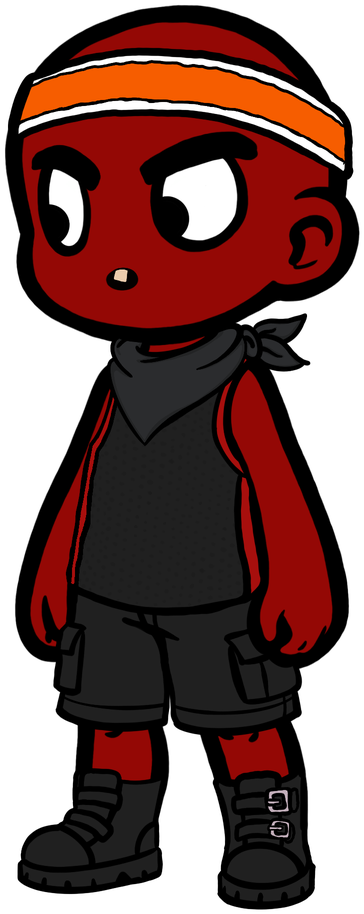
Has never cooked a burger. Has personally removed fourteen people for touching the tongs. He takes the hits so the potato salad does not have to.
Not on the Guest ListDraw nearby attacks, raise a stone shield and slow foes with an impact strike. Ability cost: 3 AP.
vanguard · ember-vanguard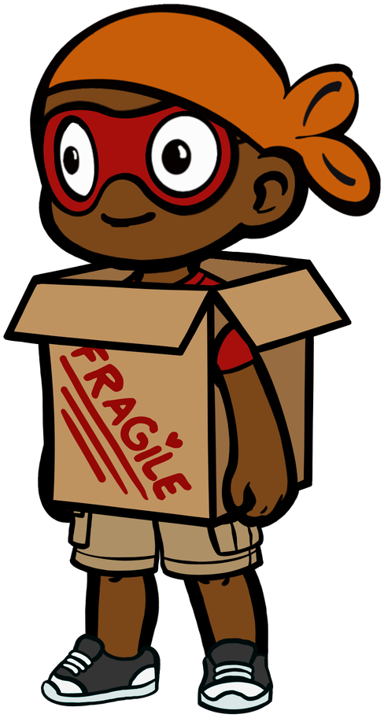
Patches up whichever guest is leaking most, then encourages them to get back in there. The replacement parts arrived in a box marked FRAGILE. So did his qualifications.
A Little Heat Fixes EverythingRepair the most wounded ally, empower their attacks and vent a shock into a foe. Ability cost: 3 AP.
artificer · ember-artificer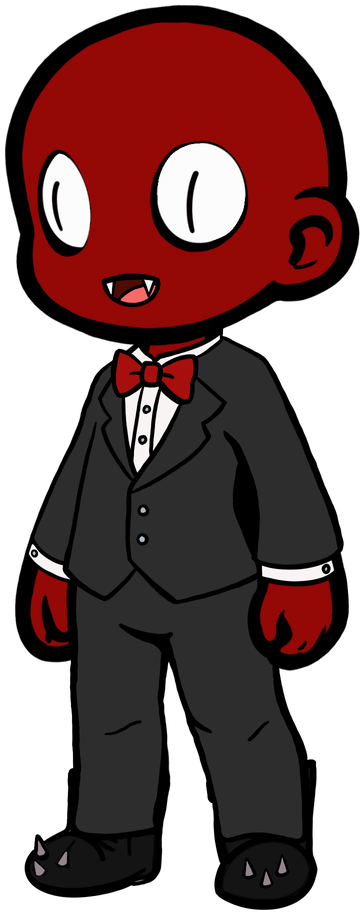
Pairs a wounded enemy with something smoky, corrosive and wildly overpriced. Recommends the house antidote to a friend. The tasting menu is legally an incident report.
Notes of RegretStrike a wounded enemy with burning, slowing venom while restoring the most wounded ally. Ability cost: 3 AP.
hexbinder · ember-sazrik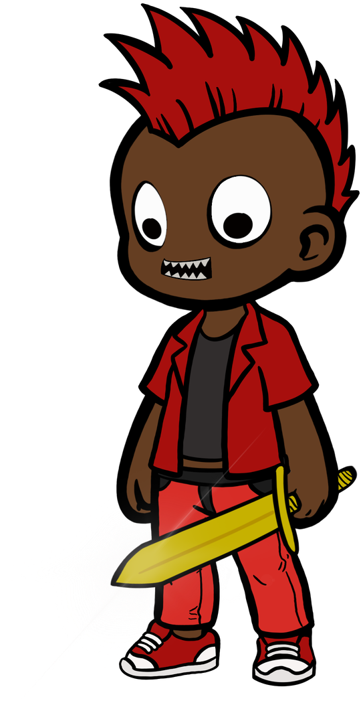
Insists the spinning knives are dinner theatre. Two cuts, one twirl, and everyone standing too close discovers the immersive portion of the evening.
Dinner and a ShowCut twice, then scatter burning sparks into every adjacent enemy. Ability cost: 3 AP.
duelist / arcanist · ember-duelist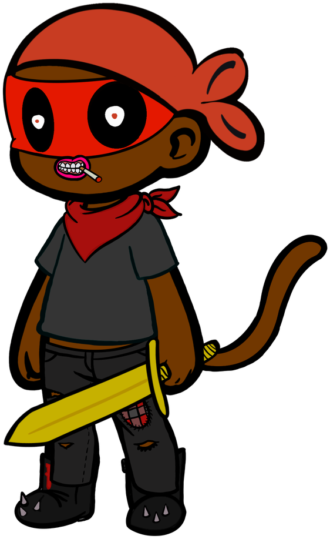
Arrives late, spots the weakest guest, and serves three cuts before anyone finds the napkins. The burning trail is how you know the catering van passed inspection.
Three Cuts, No WaitingAmbush a wounded enemy with three quick cuts, gain haste and leave a burning trail down the target column. Ability cost: 3 AP.
duelist / assassin · ember-vikka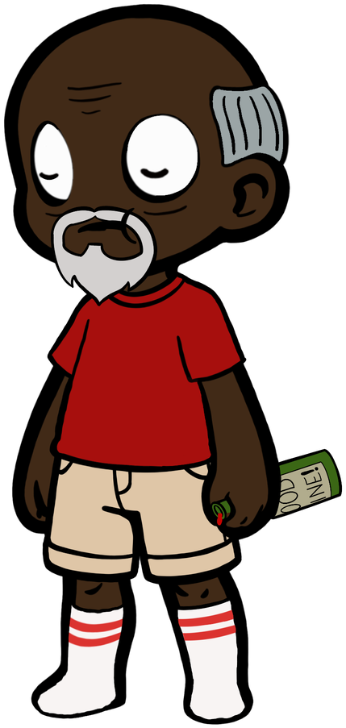
Stands between the family and the consequences. Shelters the injured, restores the neighbors, and insists the smoke is just flavor. Nobody remembers inviting him; everybody hides behind him.
Everybody Behind UncleDraw nearby attacks, shelter two wounded allies, restore those close to your shell and scorch the target. Ability cost: 3 AP.
sentinel / mender · ember-korrun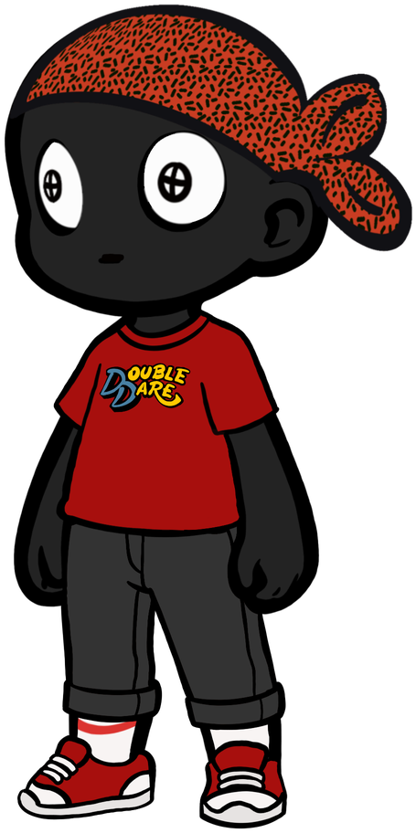
Can season an entire row without leaving the lawn chair. The first target gets extra time to reflect. Complaints must be submitted from outside throwing distance.
Pass the PepperPierce the target row with a burning feather volley and slow the primary target. Ability cost: 3 AP.
ranger / stormcaller · ember-ranger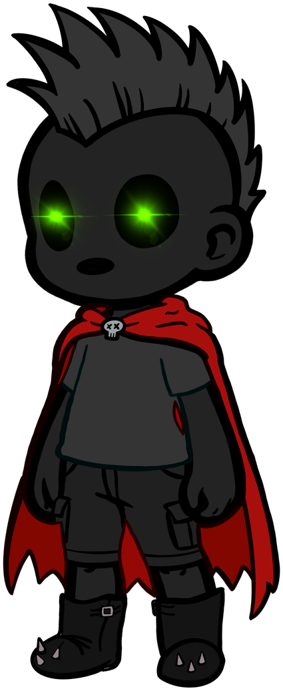
Everyone gathers around him for warmth. Everyone on the other team gathers around him because he is yelling. Either way, the heat radius is excellent.
Who Touched the Thermostat?Blast surrounding enemies and the strongest foe, raise an obsidian shield and draw attacks from adjacent enemies. Ability cost: 3 AP.
vanguard / arcanist · ember-drazhulFeeds the whole family, wraps the sickest guest in a warm blanket, and sets every uninvited visitor gently on fire. You are absolutely staying for dessert.
Have Another HelpingRestore every ally, shelter the most wounded with a radiant shield and rain lingering fire over every enemy. Ability cost: 3 AP.
mender / stormcaller · ember-aereth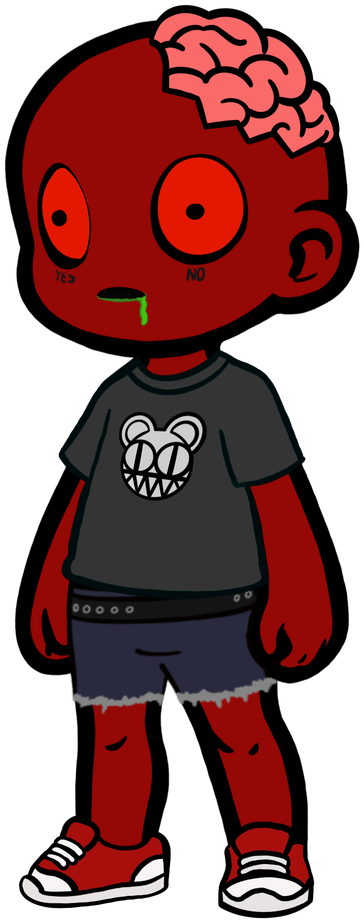
All three opinions arrive at once. One starts the argument, one escalates it, and one somehow includes the entire row and column. The exposed brain is mostly group chat.
Reply AllThree heads erupt along the target row and column, burning and weakening those enemies. Ability cost: 3 AP.
stormcaller / arcanist · ember-stormcallerThey saved the pool by banning almost everything that happens in a pool. Their protective magic is technically a liability waiver.
Patches up two friends and sends them back into the shallow end at a responsible brisk pace. Enforces the buddy system with a surprisingly hostile bubble.
Two at a Time, PleaseWrap two wounded allies in restorative foam and haste, then flick a bubble at a foe. Ability cost: 3 AP.
mender · tide-menderHas a whistle-shaped hole in his authority. Shields the neighbors, helps the worst casualty, and makes every nearby problem his problem. Still cannot swim.
I Said WalkShield nearby allies, restore the most wounded ally and draw nearby enemies toward your shell. Ability cost: 3 AP.
sentinel · tide-sentinel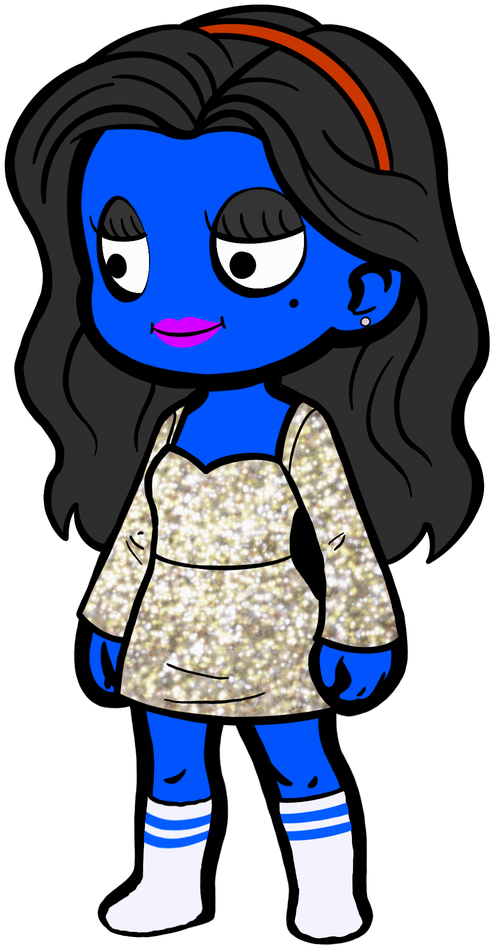
Clutches one pearl so hard it becomes an area attack. The returning sparkle is excellent for morale and minor injuries. The minutes describe this as a vigorous discussion.
An Incident at the PoolDetonate a pearl around the target; its returning light heals nearby allies and empowers a wounded ally. Ability cost: 3 AP.
arcanist / mender · tide-arcanistWatches the weakest opponent with alarming concentration. Calls it pool safety. The committee would remove him if his incident-clearance rate were not so impressive.
No DivingHarpoon the most wounded enemy, weaken it and quicken your next attacks. Ability cost: 3 AP.
ranger / assassin · tide-ranger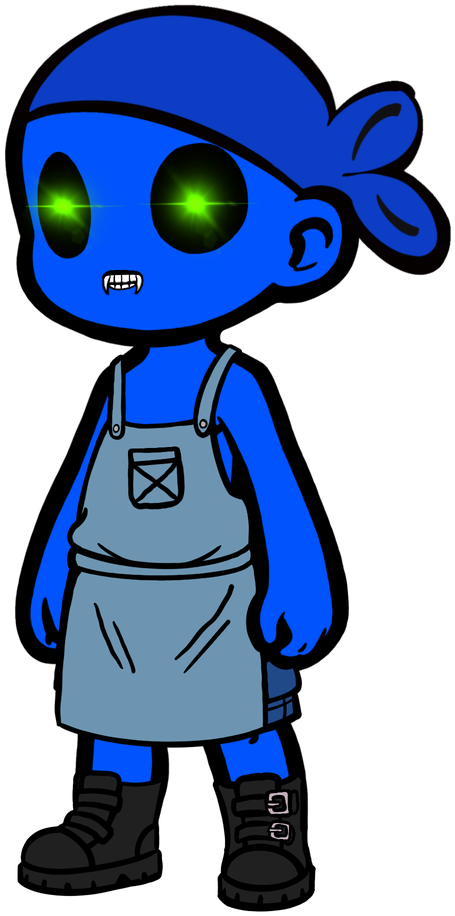
Handles the pool chemicals without reading the little pictures. Raises a shield, attracts every complaint, and emits a glow that makes the inspection team walk more slowly.
Chemical ImbalanceRaise a shield and lure nearby foes into a weakening, burning abyssal glow. Ability cost: 3 AP.
vanguard / hexbinder · tide-hexbinderA gardening club that takes invasive species personally. Their compost has started attending meetings.
Talks injured friends through their feelings and their open wounds. Sends encouragement, protective petals, and one tiny thorn for the person causing all this personal growth.
You Are Doing So WellUnfurl petals around two wounded allies to heal and shield them while a thorn strikes a foe. Ability cost: 3 AP.
mender · verdant-menderSays the smell means it is working. His spores weaken the neighbors you dislike while the one you like gets better. The garden club has stopped asking about ingredients.
Mostly OrganicInfect a clustered enemy group with weakening spores and restore the most wounded ally. Ability cost: 3 AP.
hexbinder / mender · verdant-hexbinder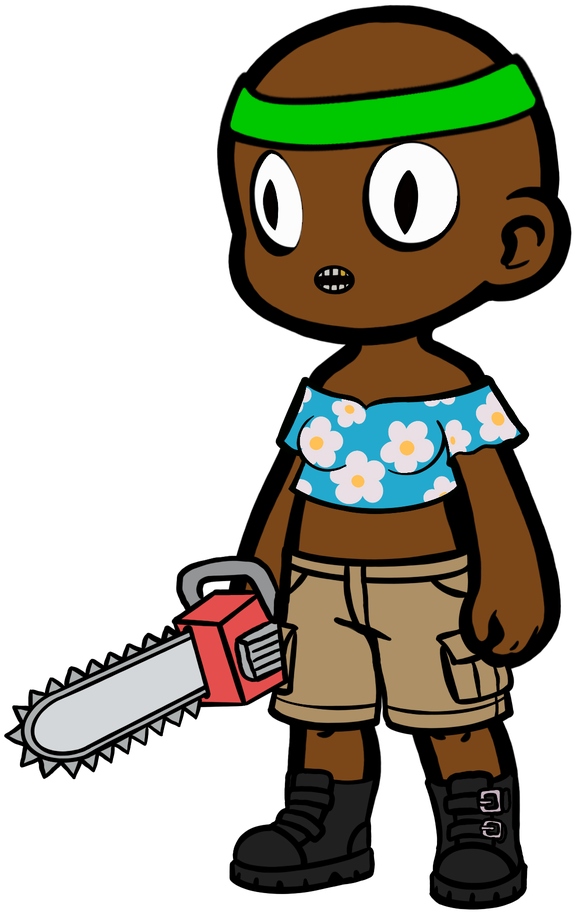
Turns one overgrown problem into three smaller problems, then feels extremely good about himself. His portfolio is mostly clippings. The chainsaw is the diversification.
CutbacksShear the target with three petal-blade cuts, then empower your own attacks. Ability cost: 3 AP.
duelist · verdant-duelist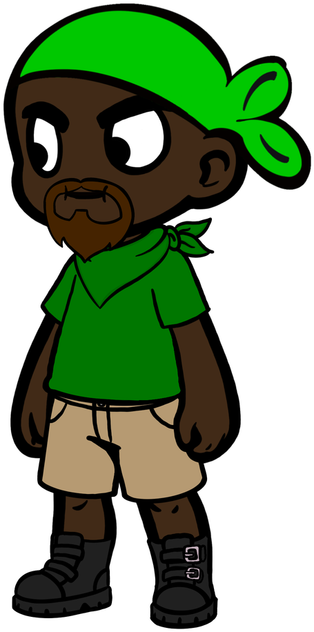
Has been standing in the same spot since the first planning meeting. Takes a beating, repairs the damage, and swats anyone who suggests a different spot.
Putting Down RootsRoot into a thick self-shield, mend your bark and draw attention while branches strike adjacent foes. Ability cost: 3 AP.
vanguard · verdant-vanguard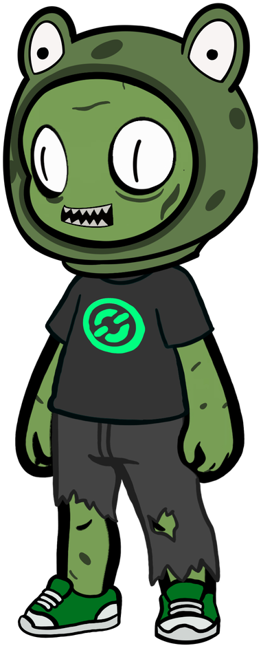
Was purchased to improve the atmosphere. Now improves himself by eating the weakest visitor. The care label says bright indirect light and absolutely no witnesses.
Do Not Feed After AnythingFinish a wounded enemy with a venomous strike; leave it weakened and burning while feeding your own health. Ability cost: 3 AP.
assassin / hexbinder · verdant-assassinDeath did not cancel their membership. They collect overdue souls and occasionally lend one back.
Only takes what you were barely using: loose change, a spare femur, the rest of your health. Calls it a victimless crime if he finishes the job.
Finders, ReapersDive into a wounded foe with a weakening strike and claim power for your own attacks. Ability cost: 3 AP.
assassin · hollow-assassinDrifts down an entire column delivering overdue notices. The paperwork burns, the recipients slow down, and the sheet remains suspiciously crisp. Laundry day is a haunting.
Final NoticeToll down the target column, leaving every struck enemy burning and heavily slowed. Ability cost: 3 AP.
stormcaller · hollow-stormcaller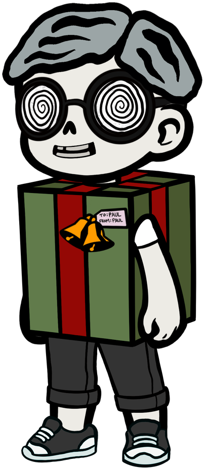
Your replacement lung comes with a bow. Restores two patients, boosts their confidence, and flicks a spare bone at the problem. Please return all unused organs.
Borrowed PartsShare stored soul-light with two wounded allies, healing and empowering them as a bone shard hits a foe. Ability cost: 3 AP.
artificer · hollow-artificer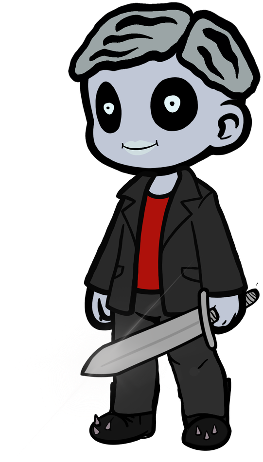
Returns every insult with interest. Cuts the current problem twice, then gives the strongest complainer special treatment. Store credit only; the store is a crypt.
Return to SenderCut the target twice; a mirror strike also damages and slows the enemy with the highest attack. Ability cost: 4 AP.
duelist / assassin · hollow-duelistKeeps the living out and the regulars standing. Takes the complaints, shields the neighborhood, and helps a wounded friend. Extremely protective for someone whose job is the opposite.
You Are Not on the CryptDraw nearby attacks, shield your surrounding allies and heal a wounded ally while bones strike adjacent foes. Ability cost: 3 AP.
vanguard / sentinel · hollow-sentinelFive repair technicians who learned healing from a troubleshooting diagram. Their first diagnostic step is hitting the problem.
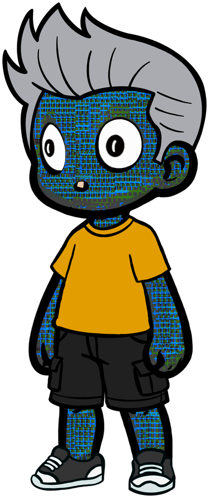
Troubleshoots a whole row, then troubleshoots the original problem again. The yellow shirt means technical support. The corrupted face means do not give him your password.
Have You Tried Turning Them Off?Open a runic beam across the target row, then concentrate a second pulse on the primary target. Ability cost: 3 AP.
arcanist · iron-arcanist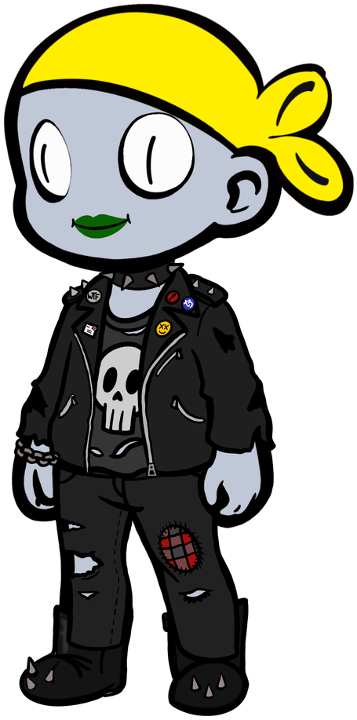
Finds the enemy doing the most damage and declares them unsupported hardware. Corrodes their confidence while patching himself up with parts of uncertain ownership.
Pre-Existing ConditionCoil around the highest-attack enemy, applying corrosion and deep weakness while repairing your own body. Ability cost: 3 AP.
hexbinder · iron-hexbinder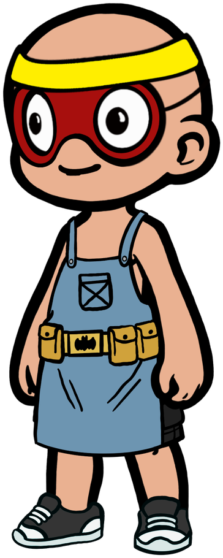
Repairs, protects and encourages the most broken teammate. A contact spark reaches the enemy. Always has one screw left over, which he describes as an efficiency improvement.
It Was Like That When I Got HereRepair, shield and empower the most wounded ally while a contact arc damages a foe. Ability cost: 3 AP.
artificer · iron-artificer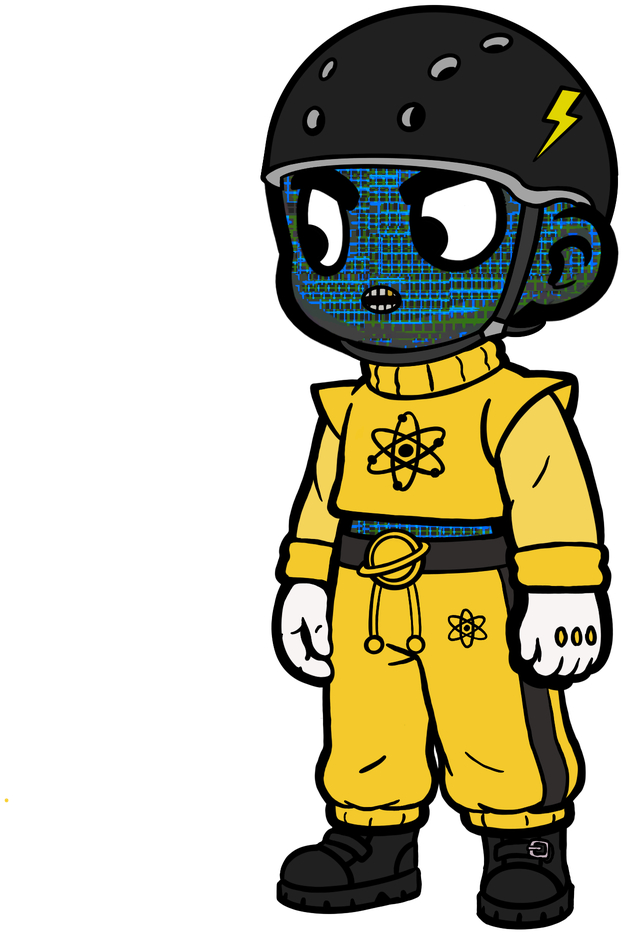
Stands behind a shield and invites the error messages to come closer. His exhaust damages the problem and encourages coworkers. Management calls this hands-on leadership.
Percussive MaintenanceTaunt nearby foes behind a self-shield; furnace exhaust strikes adjacent foes and empowers nearby allies. Ability cost: 3 AP.
vanguard / artificer · iron-vanguard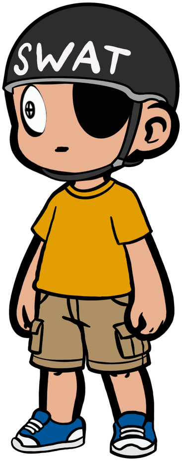
Closes one eye for accuracy. The other one is already a sight. Delivers one enormous solution, plus collateral troubleshooting for everyone standing beside it.
Factory-Reset TargetFire one immense bolt into the target, weakening it and blasting the enemies around it. Ability cost: 3 AP.
ranger / arcanist · iron-rangerA sleepover became a cosmic incident. Nobody has slept, but everybody has a theory.
Promised everyone a quiet night. Restores the nearby exhausted, somehow makes them faster, and sends one irritating spark toward the source of the noise.
Just Rest Your EyesDrift restorative starlight through nearby allies, healing and hastening them as a spark hits a foe. Ability cost: 3 AP.
mender · astral-menderPredicts that an entire row and column are about to have a bad evening. Anyone at the intersection gets the extended reading. Refunds are spiritually unavailable.
Mercury Is in Your Personal SpaceSplit a beam along the target row and column; the intersection takes both pulses. Ability cost: 3 AP.
arcanist · astral-arcanist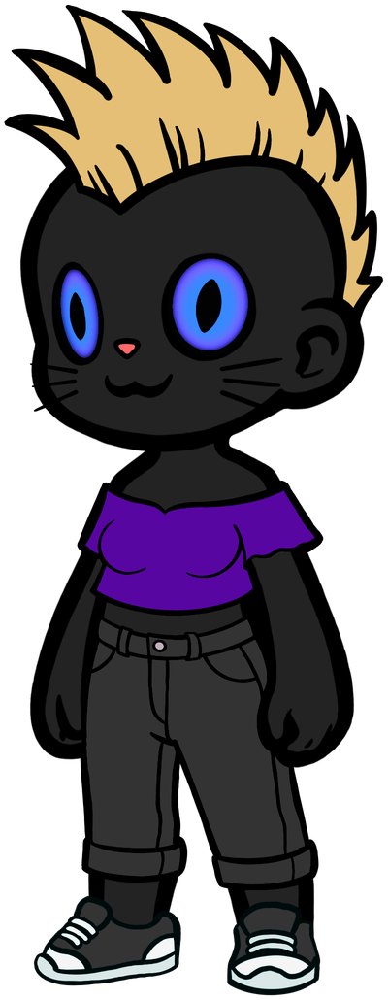
Was asleep a second ago. Now the strongest enemy is a personal emergency. Weakens them, speeds up, and makes this everyone's problem before breakfast.
Absolutely No ReasonCut into the highest-attack enemy, weaken it and accelerate your next attacks. Ability cost: 3 AP.
assassin · astral-assassinProtects two tired friends, restores himself, and invites every nearby argument to the blanket fort. No shoes inside. Hostile intent is apparently fine.
Everybody Under the BlanketDraw nearby enemies toward your crescent frame, shield two wounded allies and restore your own health. Ability cost: 3 AP.
sentinel · astral-sentinel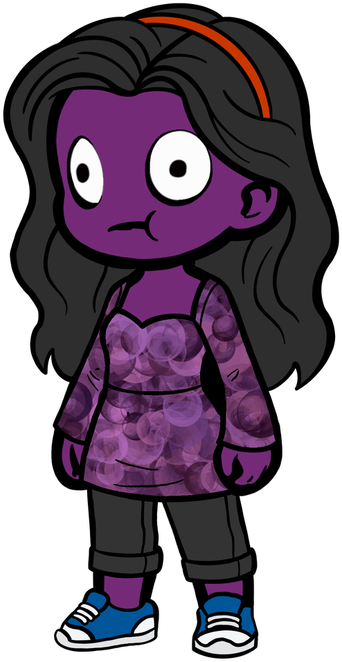
Reads one more terrible thing and rains the feeling onto every enemy. Slows the room down, helps two friends, then checks whether anybody has replied.
One More CatastropheRain burning stardust over every enemy, slow their attacks and restore two wounded allies. Ability cost: 3 AP.
stormcaller / mender · astral-stormcallerSuburban cowboys patrolling a road with no through traffic. Their jurisdiction ends at the speed bump.
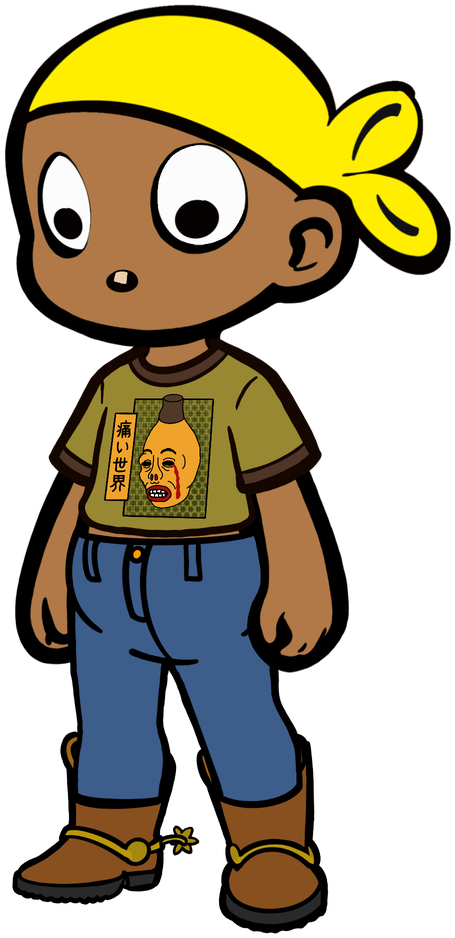
Prepared for every emergency except laundry. Leaves an enemy stinging and slow, then shares the grit with the neighbors. The dry-cleaning bill is a faction expense.
Pocket Sand, ObviouslySting the target with lingering venom and slow its attacks while grit splashes into nearby enemies. Ability cost: 3 AP.
stormcaller · dune-stormcaller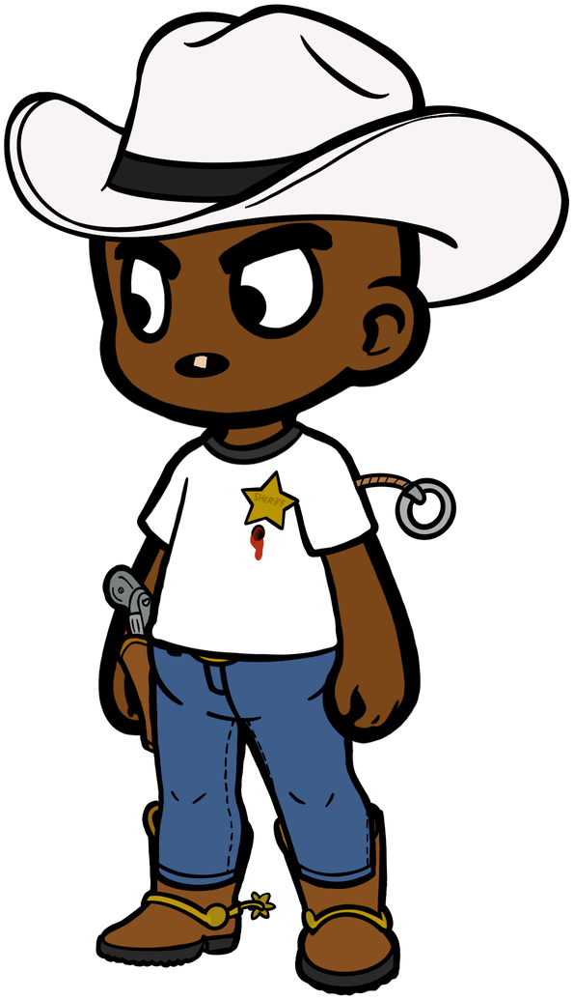
Raises a barrier and attracts every complaint within shouting distance. Slows the queue to a crawl before dealing with the first applicant. His badge is mostly confidence.
Do You Have a Permit for That?Raise a heavy carapace shield and draw nearby enemies into slowing sand before striking a foe. Ability cost: 3 AP.
vanguard · dune-vanguard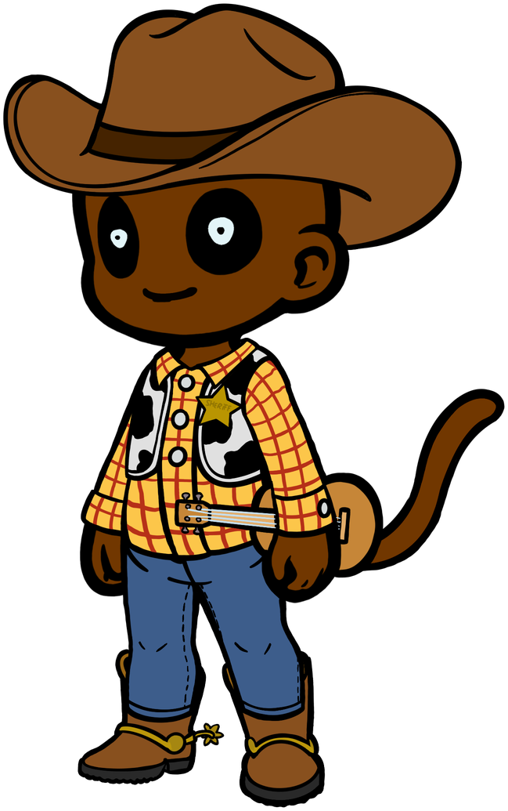
Two hits and a restorative desert breeze. Claims the guitar is both instrument and first-aid kit. Four AP buys the extended version; nobody requested an encore.
One More SongStrike twice while a restorative desert wind heals and hastens a wounded ally. Ability cost: 4 AP.
duelist / mender · dune-duelist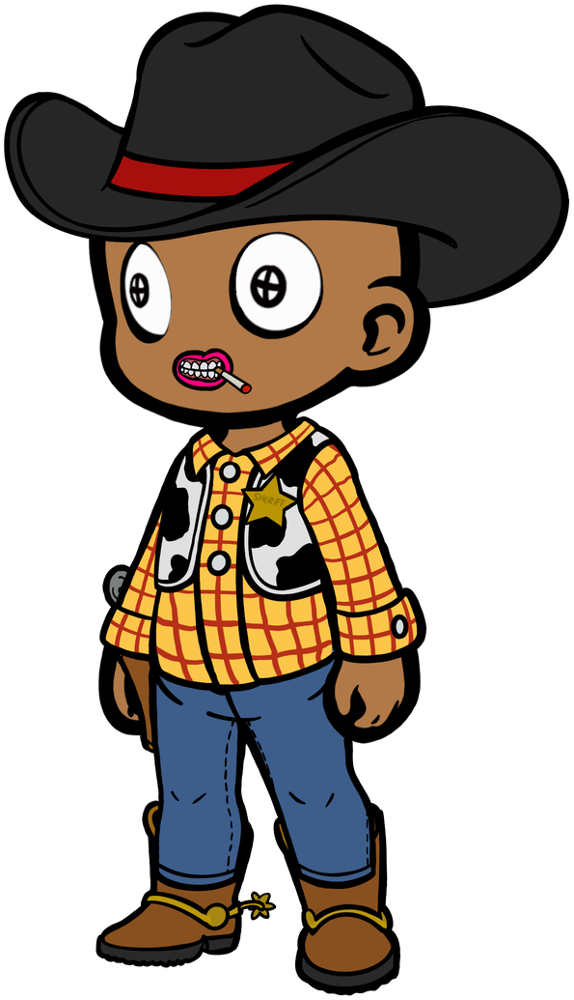
Gets his leads from the neighborhood group chat. Marks the weakest target, makes the wound worse, and calls it community engagement. His bounty is redeemable for parking validation.
I Heard You Were WoundedMark a wounded enemy with a concentrated shot that leaves burning wounds and weakness. Ability cost: 3 AP.
ranger / assassin · dune-rangerRestores the whole group and gets everyone moving, then directs one venomous correction at the enemy. The water is free. The advice is unavoidable.
Stay Hydrated, IdiotRestore and hasten your entire army while an enemy suffers weakening venom. Ability cost: 3 AP.
mender / hexbinder · dune-menderAn organized comfort ring. Every hug comes with protection, and the protection is not optional.
Heals, shields and hurries one distressed friend into a better day. The comforting thread also lashes the enemy. It is called tough love on the invoice.
You Look Like You Need ThisHeal, shield and hasten a wounded ally inside a lunar cocoon while a silver thread lashes the target. Ability cost: 3 AP.
mender · silk-lunethThree quick stitches for the enemy, encouragement for the neighbors, and a little self-repair. Absolutely adorable until the needlework starts.
A Stitch in Your SideMake three needle cuts, empower adjacent allies and mend your own downy body. Ability cost: 3 AP.
duelist / artificer · silk-thimriOne hug releases years of dust, bad decisions and lingering weakness. Finds the most worn-out enemy for a final sting. Hand wash only; do not make eye contact.
Do Not Shake IndoorsDust a clustered enemy group with burning weakness, then sting the most wounded foe. Ability cost: 3 AP.
hexbinder / assassin · silk-vespera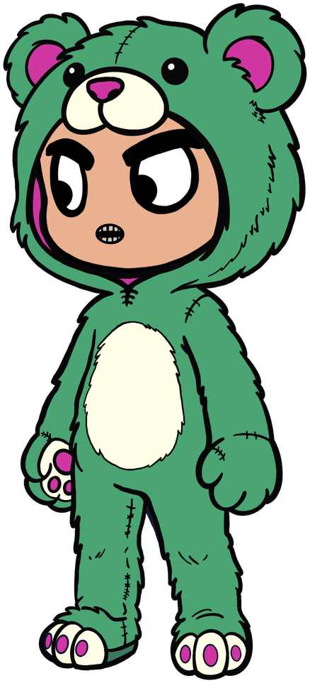
Shields the whole team, patches two friends, and makes every nearby problem come to him. Nobody leaves the blanket fort feeling unsupported. Or particularly free.
Group Hug Is MandatoryDraw nearby attacks beneath your wings, shield the whole army and heal two wounded allies while striking a foe. Ability cost: 3 AP.
sentinel / mender · silk-orrumaThe night shift went in for ice and formed a faction. They are keeping morale at a brisk minus twelve.
Singles out the enemy doing the most damage and gives the whole column a cold reception. The hood is cozy. The aim is not.
Freeze FrameDrive a quill into the highest-attack enemy while an icy volley strikes and slows the target column. Ability cost: 3 AP.
ranger / stormcaller · rime-sorynWarms up nearby friends, wraps himself in frost, and tells close-range enemies something devastatingly unkind. Has been defrosting emotionally since Tuesday.
Warm Thoughts, Cold HandsRestore nearby allies, raise a frost shield around yourself and weaken enemies within claw reach. Ability cost: 3 AP.
mender / hexbinder · rime-urvekSweeps away nearby trouble, slows an entire row, and puts two injured friends behind protection. Takes freezer-door etiquette more seriously than most people take life.
You Are Letting the Cold OutSweep adjacent foes with your tusks, taunt nearby enemies, slow the target row and shield two wounded allies. Ability cost: 3 AP.
vanguard / sentinel · rime-boruunTwo decorative guardians who elected themselves the homeowners' association. Their complaints are structurally sound.
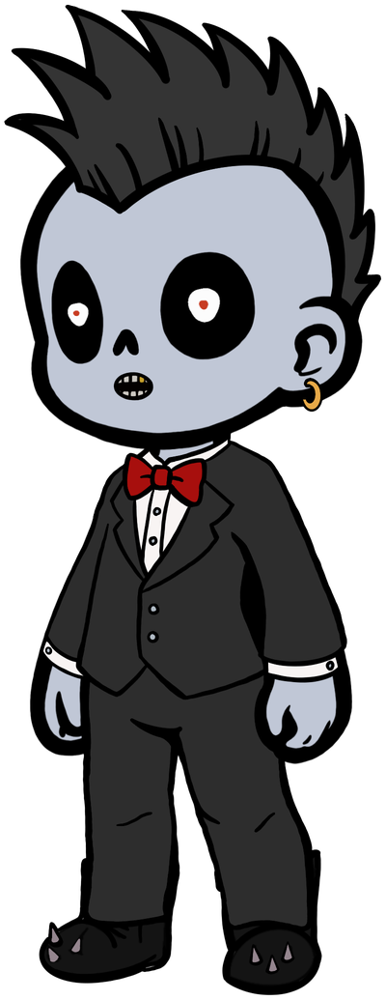
Damages the property, shields himself, and weakens the strongest person likely to complain. Then files a complaint about declining property values. Four AP covers the assessment fee.
Property Damage AssessmentShatter stone around the target and down its column, seal yourself in a shield and weaken the strongest enemy. Ability cost: 4 AP.
arcanist · gargoyle-kharvox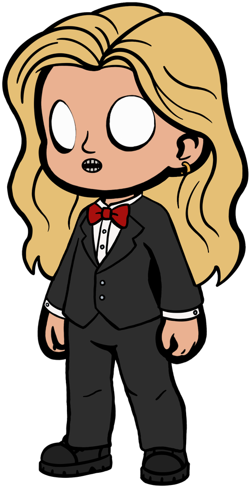
Protects the neighbors, restores an injured friend, and throws one very pointed architectural opinion at the strongest enemy. Polite, poised, and absolutely not a suggestion.
Bless Your Load-Bearing HeartDraw nearby attacks, shield surrounding allies, restore a wounded ally and hurl a stone feather into the strongest foe. Ability cost: 3 AP.
sentinel / ranger · gargoyle-elyraA freelance understudy. No faction bonus, no class membership, no original material.
Copies a teammate and performs the useful parts twenty-five percent harder. Still contributes to no team identity whatsoever. Left alone, discovers that originality is considerably less effective.
MimicryAt battle start, copy one random fielded non-Mime ally’s ability, AP profile and final combat stats; beneficial stats including Speed, ability score and AP regeneration become 1.25×. Remain independent. Alone, Pantomime strikes for 177.6% ability score.
Independent · mime